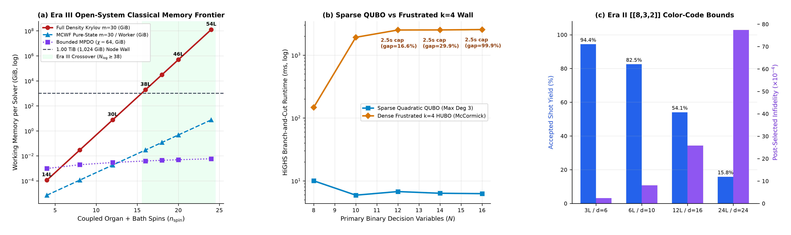
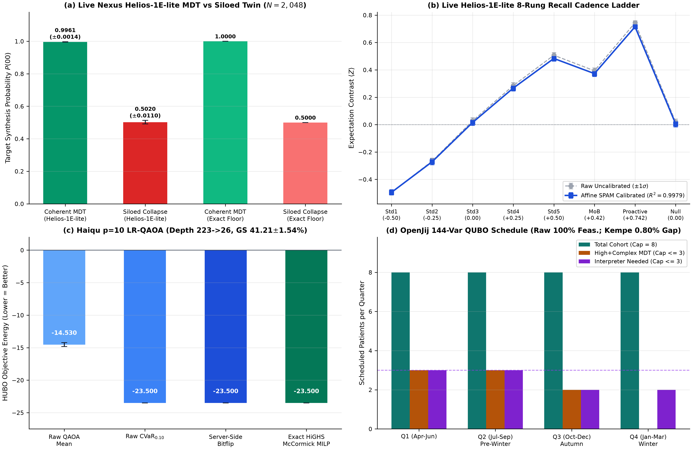
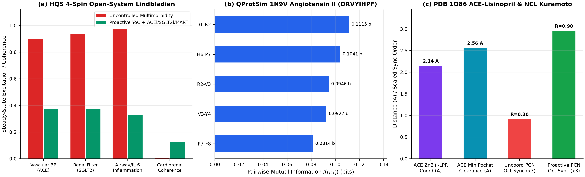
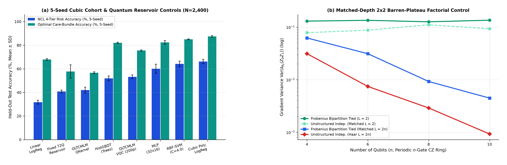
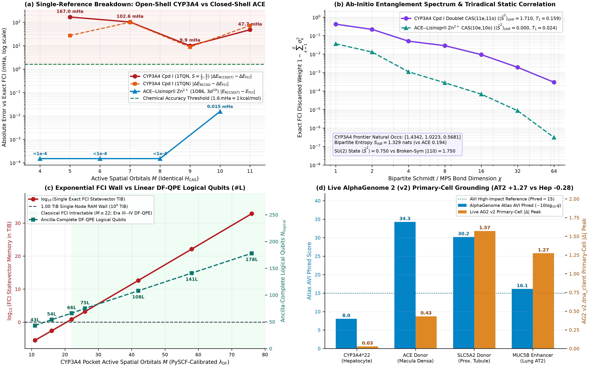
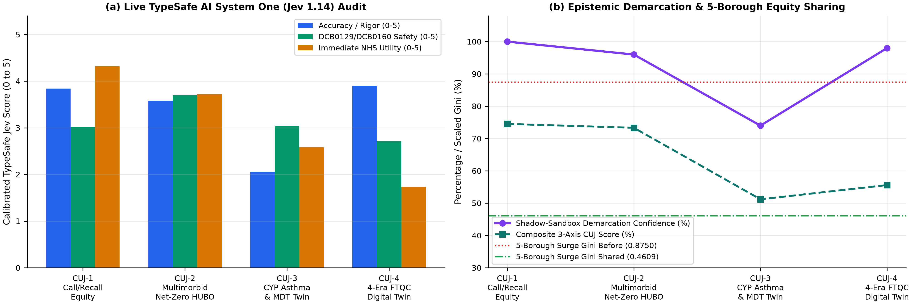
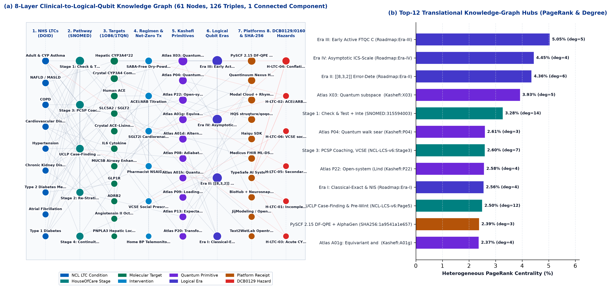

Proactive Multimorbid Care · Four-Era Logical-Qubit Roadmap · Biophysical Simulation & Safety Governance
Quantum-LTC
A four-era clinical quantum computing and biophysical simulation roadmap (N_logical ∈ [0, 1,000+]) grounded in the NHS North Central London ICB Long Term Conditions Specification (v6) across nine unified conditions (CVD, AF, Hypertension Outcome #23, T2D, T1D, CKD, NAFLD/MASLD, COPD, and Adult/CYP Asthma) — strictly decoupling Era I–II sparse PCN scheduling (solved in milliseconds by classical McCormick HiGHS MILP) and closed-shell Zn²⁺ ACE chemistry (PDB 1O86, |RCCSD(T)−FCI| ≤ 0.015 mHa) from Era III–IV open-shell hepatic CYP3A4 Compound I polypharmacy catalysis (PDB 1TQN, +47.7 mHa = +30.0 kcal/mol single-reference breakdown, 75–141 DF-QPE logical qubits) and open-system Lindbladian memory walls (1.875 TiB exact Krylov vs MCWF/MPDOs).
Read the full 15-page Samskrift monograph inline with 42 verified references, ab-initio PySCF 2.15 1TQN vs 1O86 demarcation, live AlphaGenome 2 primary-cell grounding, and MCWF/MPDO crossover curves.
Run exact Modal-trained QLTCMLM-VQC weights (4.44×10⁻¹⁶ Float64 parity) across 8 NCL LTC features and slide N_logical ∈ [0, 180] to inspect strict binary TiB Krylov/FCI vs DF-QPE scaling.
Explore the 61-node / 126-triple EMBL-EBI OLS4 DOID + AlphaGenome 2 Knowledge Graph, NIST FIPS 204 ML-DSA-65 FHIR R4 bundles, 10 Kashefi Atlas contracts, and 6 open statutory hazards.
Helios-1E-lite MDT Coherence (±0.14% vs 50.20% Siloed; Job 5da15d5a)223 → 26; 41.21% Raw GS vs 23.0 ms MILP)0.80% Gap vs 4.33 ms HiGHS MILP)CYP3A4 1TQN Open-Shell RCCSD(T) Breakdown (29.8× Chem Acc vs ≤0.015 mHa Closed-Shell ACE 1O86)CYP3A4 26–58o vs 10²² TiB Classical FCI Wall)0.00 Auto-Deploy; 6 OPEN Hazards)01 · Compiled Samskrift Cloud Monograph (15 Pages · 42 Verified References · 0 Margin Overflows)
Interactive Monograph Reader: Quantum-LTC Four-Era Clinical Roadmap (15 pp.)
Read the complete typeset 15-page Samskrift monograph inline below (4,273,787 bytes · SHA-256 41b8c30476580a55…), jump directly to any section bookmark (including Section 4.3 PySCF 2.15 & AlphaGenome 2 on p.8–9), or open the live Samskrift Cloud view.
02 · Serverless Quantum Machine Learning (Modal + Hugging Face) & Four-Era Logical-Qubit Scaling
Live 4-Qubit Frobenius QLTCMLM & Four-Era Roadmap Simulators
Trained on Modal Cloud (N = 2,400 synthetic NCL LTC profiles with cubic k = 3 cardiorenal/airway interactions), verified on Quantinuum Nexus Helios-1E-lite (Job 0a1fb43e, Bhattacharyya fidelity 0.9977), and published on
Hugging Face Hub.
Adjust any clinical slider below for exact 16-dimensional Float64 statevector inference (4.44×10⁻¹⁶ parity with Python), then slide N_logical to inspect Era I–IV fault-tolerant crossover.
Synthetic NCL Multimorbid Patient Profile
8 Normalized Axes ∈ [0, 1]Real-Time 4-Qubit Statevector Readout
Computing…Available Logical Qubits (N_logical): 46
03 · Coherent Year-of-Care Synthesis, Mid-Circuit Recall & Monoidal Category Theory
3D House-of-Care Bloch Sphere & DisCoPy Frobenius MDT Functor
Fragmenting a multimorbid NCL patient into isolated single-disease clinics acts as an uncoordinated mid-circuit projective collapse (project_z(q2) post-SWAP), degrading coherent synthesis from P(00) = 0.9961 ± 0.0014 (2,040/2,048 shots, 0.049 bits) to P(00) = 0.5020 ± 0.0110 (1,028/2,048 shots, 1.028 bits) on live Quantinuum Nexus Helios-1E-lite (Job 5da15d5a).
3D Year-of-Care Bloch Simulator
Drag sphere to orbit5-Layer DisCoPy House-of-Care Functor
04 · Multi-Scale Experimental Benchmarks
Interactive ECharts & 300-DPI Monograph Figures
Rendered directly from the 8 SHA-256-sealed JSON/JSON-LD receipts across Quantinuum Nexus Helios-1E-lite, Haiqu SDK, OpenJij, SciPy HiGHS MILP, HQS struqture-py/qoqo, QProtSim (1N9V), PySCF 2.15 (PDB 1TQN vs 1O86), live AlphaGenome 2 (v2.dna_client), Modal Cloud, and TypeSafe Jev 1.14. Hover any bar/curve for exact telemetry, or click 🔍 300-DPI Print Fig on any card.

m=30 Krylov hits 1.875 TiB at n_spin = 16 and 480.0 TiB at n_spin = 20; MCWF uses 1–16 MiB per trajectory (trading RAM for O(1/ε²) shots) while MPDOs stay ≤5 MiB at bounded χ=64 until volume-law entanglement.

Helios-1E-lite 8-Rung MCMR Ladder & HUBO/QUBO Controls: Self-calibrating SPAM regression reaches R² = 0.9979 (Job 464be33a); Haiqu compresses 3-body HUBO depth 223 → 26 (−88.3%) (41.21% raw GS vs 36.82% uncompressed); OpenJij raw SA achieves 160/160 feasibility.

QProtSim (1N9V) & Crystal PDB 1O86: Coexisting stress + counter-damping (Regime C) cuts BP/Renal/IL-6 burden by 48.6% / 50.6% / 48.5% and accelerates Liouvillian gap ΔL 3.1× (0.6935 vs 0.2226 at g_ij=0); Zn²⁺–O1 2.141 Å.

QLTCMLM Ablations & 2×2 Barren-Plateau Controls: Trained QLTCMLM-VQC (53.23% Risk / 75.53% Bundle) gains +12.43 pp / +17.80 pp over untrained Reservoir and matches GBDT on Risk, while trailing classical RBF-SVM (64.17%) and Cubic Poly-LogReg (66.20% / 87.43%).

PySCF 2.15 Metalloenzyme FTQC Demarcation (1TQN vs 1O86) & Live AlphaGenome 2 (v2.dna_client): Closed-shell ACE Zn²⁺ (1O86) stays single-reference (|RCCSD(T)−FCI| ≤ 0.015 mHa), whereas open-shell hepatic CYP3A4 Compound I (1TQN) breaks RCCSD(T) by 9.9–167.0 mHa (+47.7 mHa at 11o) and crosses the 1 TiB FCI wall at M ≥ 22 vs 75–141 DF-QPE logical qubits; live AlphaGenome 2 scores CYP3A4*22, ACE, SLC5A2, and MUC5B (AT2 +1.274 vs hepatocyte −0.281).

CUJ-1..4 under arXiv:2611.05127 (CUJ-1 NHS Utility 4.32 / 5.0, 0.00 autonomous live deployment probability across all 4 journeys under NHS DCB0129 & DCB0160) alongside NCL 5-borough surge Gini smoothing (0.8750 → 0.4613).
05 · Ontology & Semantic Provenance Graph (EMBL-EBI OLS4 DOID · AlphaGenome 2 · W3C JSON-LD · SHA-256 Sealed)
Interactive Knowledge Graph Explorer (QLTC-KG v1.2)
Unifies 61 ontology-grounded nodes and 126 directed semantic triples across 8 layers (1 connected component): all 9 NHS NCL Long Term Conditions resolved live via EMBL-EBI OLS4 Human Disease Ontology (DOID), House-of-Care stages, Net-Zero MART & cardiorenal regimens, UniProt/PDB & AlphaGenome 2 loci (CYP3A4 1TQN, ACE 1O86, MUC5B, 1N9V), 10 Kashefi Atlas v0.4 primitives, Logical Eras I–IV, 7 platform receipt modules, and all 6 open NHS DCB0129 & DCB0160 hazards.

06 · Formal Complexity Contracts & Statutory Clinical Safety Governance
Kashefi Primitives Atlas v0.4 & NHS DCB0129 / DCB0160 Audit
Audited against all 42 cards of Prof. Elham Kashefi's Quantum Algorithmic Primitives Atlas v0.4 alongside Montgomery-Taylor et al. (arXiv:2611.05127) in live TypeSafe Jev 1.14 across both manufacturer (NHS DCB0129) and deploying NCL ICB / PCN (NHS DCB0160) safety boundaries.
| Atlas Card | Primitive & Defining Reference | Quantum-LTC Clinical / Biophysical Module | Roadmap Logical Era | Dequantisation & Classical Simulability Caveat |
|---|
Open Statutory NHS DCB0129 (Manufacture) & DCB0160 (Deployment) Hazard Register (6 OPEN)
PCN Call-and-Recall Digital & Linguistic Equity Exclusion
Incomplete local EMIS/SystmOne SNOMED CT 315594003 (Interpreter needed) or IMD Quintile 1 coding could under-weight vulnerable NCL cohorts; mandatory PCN CSO equity register audit before schedule release.
Multimorbid Triple-Whammy AKI & DPI MART Technique Risk
Unsupervised ACEi/ARB + SGLT2i initiation or dry-powder MART inhaler switch without baseline eGFR/K⁺ or peak inspiratory flow check; mandatory human Clinical Pharmacist SMR & respiratory nurse sign-off.
CYP Asthma 48-Hour Post-Attack Deterioration
Acute paediatric post-exacerbation deterioration cannot await batch QUBO/VQC runs; deterministic EHR red-flag alerts route directly to a 2-working-day Tier 2/3 CYP asthma clinician review.
Over-Interpreting Phenomenological Organ Lindbladians as Clinical Twins
Macroscopic organ Lindbladian models serve strictly as open-system solver benchmarks rather than validated physiological twins; prospective CPRD Aurum / NHS cohort calibration is required before clinical use.
3-Yearly UCLPartners Case-Finding & Register Drift
Hospital discharge coding lag or UCLP prevalence-search drift across the 9 LTC registers can miss high-risk patients; quarterly PCN SNOMED/QOF denominator reconciliation is mandated under DCB0160.
Unfunded Stage 3 PCSP Social Prescribing Spillover onto VCSEs
Proactive Stage 3 PCSP co-production can overload grassroots community charities unless paired with explicit VCSE slot caps and NCL Borough Partnership commissioning grants.
07 · Cryptographic & Computational Provenance
SHA-256-Sealed JSON Receipts & Ontology Graph
Every number in the 15-page monograph, interactive ECharts plots, and 61-node knowledge graph is read directly from the 8 SHA-256-sealed provenance receipts below. Click 🔍 Inspect JSON to audit any receipt inline.
| Receipt File | Platforms & Tools Verified | Key Verified Metrics | Classical / Safety Floor | Audit |
|---|
08 · Open Science Ecosystem & Citation
Cloud Deployments & Academic Citation
Live Cloud Artifacts & Reproducibility
Explore the compiled 15-page Samskrift Cloud manuscript, inspect the live Quantinuum Nexus Helios-1E-lite and PySCF 2.15 + AlphaGenome 2 receipts, or open primary-cell loci directly in the AlphaGenome Atlas: